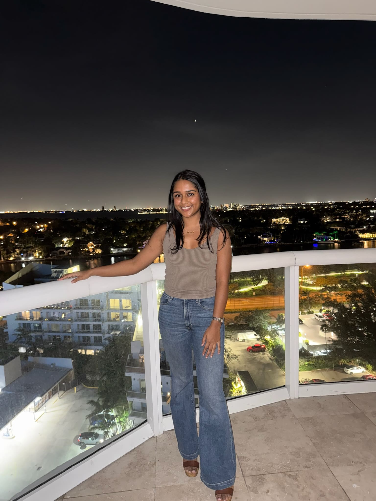

Born in Tokyo and raised in New Jersey, I'm currently studying UX at the University of Michigan. I've always loved to dance, and a few years ago I started diving into electronic music production and I am still learning and experimenting every day. I fell in love with electronic dance music and now I’m passionate about sharing new tracks, artists, and concert experiences with others! I love to discover new music and broaden my taste in dance music every day.